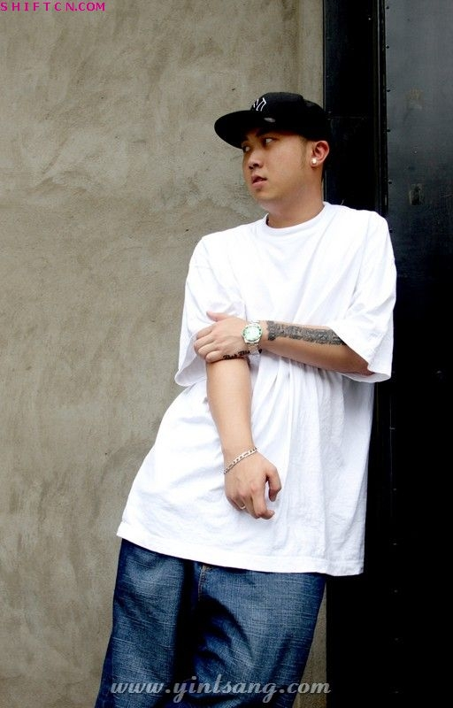

|

本档案源于原隐藏网，由ShiftCN档案馆非商业存档，仅作历史内容留存
Sbazzo（a.k.a马克）--“Bad Blood”说唱组合的队长。出生于北京长在加拿大。出道不久便在中国说唱界赢得了一致好评。2002年，作为中国第一支先锋说唱组合“隐藏”的一员，他参与的“隐藏”首张专辑《为人民服务》成功发行。《为人民服务》专辑一面市就引起了国内音乐界和国际上的关注从而参选2003年度百事音乐风云榜的评比，被提名为最佳摇滚说唱组合。并最终赢得了该奖项。这个新闻被《洛杉矶时报--LA TIMES》，《中国时报--CHINA DAILY》和《中国音像杂志》等多家媒体争相报道。同时，“隐藏”又做为CCTV-1、PBS、CTV和STIR TV 的特邀嘉宾录制了多期访谈节目。
随着“隐藏”取得的成功，Sbazzo开始在中国、加拿大和美国等多个国家/地区演出。他的音乐更被NIKE、ADIDAS、REEBOK、李宁、WHITE RABBIT、泰山饮料公司和中国篮球协会用作广告歌曲。Sbazzo参与并合作过的演出与艺人更是不计其数，崔健、龙门阵、韩红、李宇春（超级女生冠军）、Onyx、DJ Kid Koala、The Jungle Brothers和Unly Duckling等等……
目前，Sbazzo正在忙于制作一系列新作品和下一张新的合辑(ＭＩＸＴＡＰＥＳ)，在即将推出的视听ＨＩＰＨＯＰ杂志《ＦＡＲ－DVD》中也同样收录了他和北京顶尖HIP HOP艺人共同制作的作品，贯穿始终。如今，包括双ＣＤ《ＳＥＣＴＩＯＮ－６》，《ＫＩＮＧ ＯＦ ＢＥＩＪＩＮＧ》，以及Ｓｂａｚｚｏ最新完成的作品现已在全国范围内同步上市。
“隐藏”演艺经历：
08-2003 北京“反流行”音乐节演出
12-2003 北京音乐台访谈
12-2003 中国电台国际音乐奖—2003年度最佳摇滚说唱组合
12-2003 “隐藏”《为人民服务》专辑发行(销售量70，000)
02-2004 第四届“百事风云榜”—最佳新摇滚说唱组合提名
03-2004 “龙门阵”唱片ft “隐藏”, MC Webber和 Sbazzo
04-2004 PBS电视采访（收视于美国及加拿大地区）
05-2004 辽宁文化节表演嘉宾(25,000 观众的场地)
05-2004 北京“朝阳音乐节”
07-2004 Supathugs & DJ Jamz – 《So Hot It Hertz》唱片; “隐藏”- 《Blackout》
07-2004 泰山饮料公司电视广告 (中国南方地区播出)
07-2004 DJ Kid Koala 亚洲巡演 ft “隐藏” 在“Club Mix”
08-2004 “Fruit & Flower Mountain”音乐节(连续10天)
09-2004 国际DMC大赛，“Yan Club”，北京
09-2004 “Ugly Duckling (San Francisco) ft “隐藏” ，“Yan Club”，北京
09-2004 中国“Hip-Hop Now”唱片“隐藏”-《欢迎来北京》
10-2004 “CMCB” – 《谁动了我的炸酱面？》ft. Sbazzo and Foenix XIV
11-2004 Stir TV专访(美国有线电视)
02-2005 “Vandal Rebirh of a Classic Obsession”-Grand Lotus Supreme ft “隐藏”
03-2005 “EA 运动中国游戏发布会” ，Rojam, 上海
03-2005 王迪《中国说唱》 ft “隐藏” and “MC Webber”
04-2005 [嚎叫唱片]《向崔健致敬》翻唱合辑: “隐藏”- 《High》
05-2005 CCTV 电视连续剧: 片头/片尾曲
06-2005 Danny Way Jumps the Great Wall- Yin Ts’ang Performance
06-2005 CCTV-1 “隐藏”专访
06-2005 加拿大CTV “隐藏”专访
07-2005 Adidas 3对3街头篮球赛, “隐藏”MC/DJ
07-2005 大连国际“B-Boy Channel”比赛, “隐藏”MC/DJ
隐藏网相册:http://www.shiftcn.com/Photo/SEXY/hiphopstar/200612/15.html
|